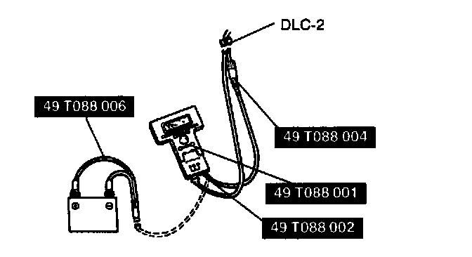

BAC Valve Operation Inspection
BAC Valve Operation Inspection
1. Connect the NGS tester to DLC-2.
2. Select "PID/DATA MONITOR AND RECORD" and press TRIGGER.
3. Select "RPM" and press TRIGGER.
4. Verify that the engine is in cold condition, then start the engine.
5. Verify that the engine speed decreases as the engine warms up.
6. If the engine speed does not decrease or decreases slowly, inspect the water hose connected to the BAC valve for leakage and clogs.
7. If the water hose is okay, inspect the following.
- Air valve
- Idle air control valve